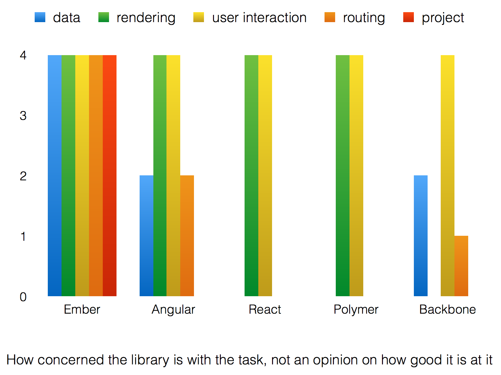

AngularJS 101
benjaminmaggi@gmail.com
Angular's creation
- It was created by Miško Hevery
- All previous MV* FrontEnd frameworks had 80% of the code for DOM manipulation and 20% for code that matters
- You had to explicitly say exactly what you wanted to do with DOM every time
- It wasn't fast to develop at all
Comparsion

Angular's 4D
- Declarative
- Data Binding
- Directives
- Dependency Injection
Rendering
• The UI stays up-to-date with the magical $scope object’s properties (a lot like CSS, actually) via dirty- checking.
• Directives allow you extend HTML with behavioral hooks.
• Composing attribute directives is powerful
• Directive API is COMPLETELY NUTS.
Data
• $http - simple xhr module, mostly exists for dirty checking to just work™.
• $resource - declarative, model-like module to hook up an HTTP API.
User Interaction
• Same paradigm as rendering, use HTML and $scope.
• Maps an event to a method on $scope with arguments called from the HTML attribute.
• No delegation, events live with the element.
Routing
• ng-view directive provides a single rendering outlet on the page.
• Configure matching routes to a template and controller to drive it.
• Pretty limited since you can’t nest it.
• They are rethinking their router completely, there’s also ui-router in the meantime that supports nesting.
Project Stuff
• ...
• linting, testing, minification, dependency management...
Download
$ bower install angular
$ bower init
<script src="bower_components/angular/angular.min.js"></script>